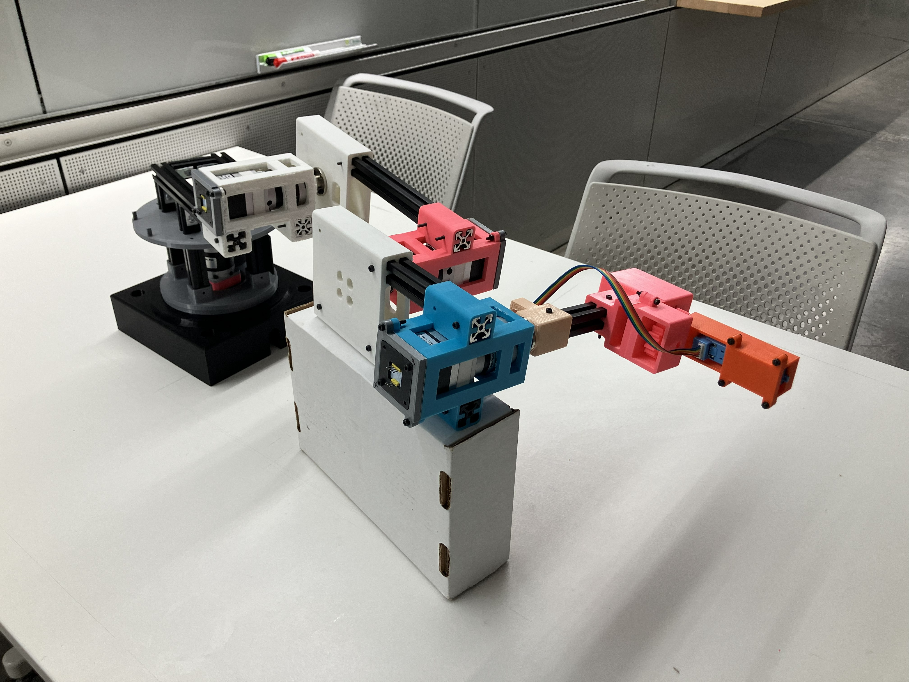
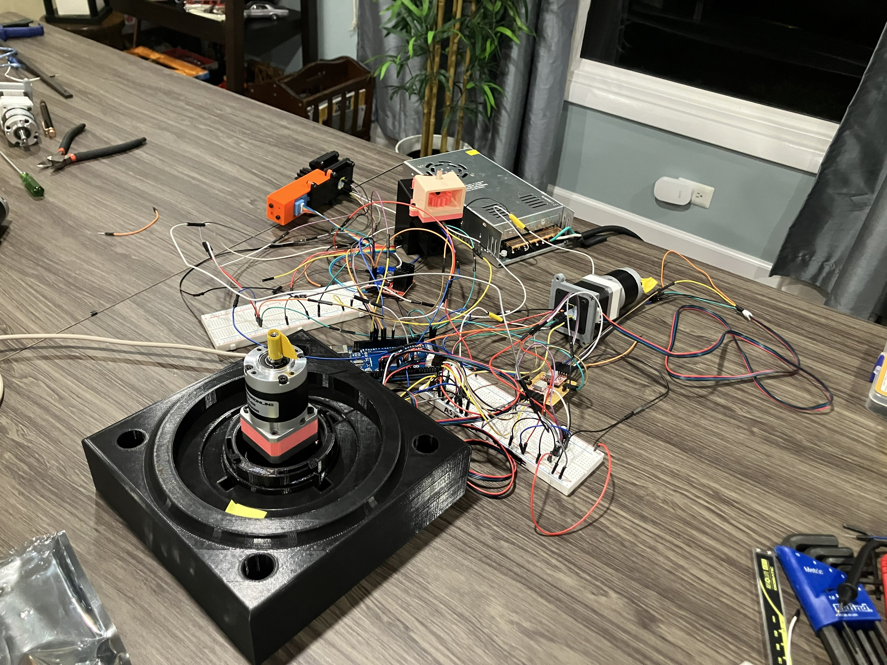

Budget & Event: Built from scratch on a strict $300 budget for UIUC's Engineering
Open House (EOH).
In-House Design: Handled full end-to-end mechanical design, circuit design, control
schemes, and backend solver development.
My Role: Led the design and development of the controls and electrical hardware.
Objectives: Navigating the end-effector smoothly through its task space, with bonus goals
of pick-and-place and light painting.
Interactive 3D CAD Assembly (Click and drag to rotate, scroll to zoom).
Mechanical Design & Assembly
The arm was modeled in Fusion 360, factoring in strength, rotational limits, and weight
distribution. The linkages consisted of pieces of 80/20 aluminum extrusion for strength
and 3D printed PLA for precise electronics housing and attach points. The design of the
arm was inspired by the UR3 robotic arm, which was chosen for its simple joint configuration,
especially at the wrist.

Electrical Design
Before implementing the electrical system, I created a comprehensive circuit schematic to
plan power delivery,
motor control, and sensor feedback. The goal of the schematic was to act as
a blueprint for the entire
electrical system, ensuring that all components were properly connected and also to learn about the
motors,
control modules, encoders, and microcontroller at a time
when budget constraints prevented us from getting our hands
on the hardware yet.
Electronic Components
For actuation, I chose to use four NEMA stepper motors for the base, shoulder, elbow, and one
wrist joint
along with two lighter DC motors for the other two wrist joints. The steppers were chosen for
their very high
torque-to-price ratio while DC motors had to be used at the outer joints due to weight constraints. The base
and shoulder motors were equipped with a 20:1 and 50:1 gearbox respectively to further
increase their torque
output. Ideally we would have opted for higher quality DC motors with high precision and torque, however with
a budget of $300 we couldn't afford to put any more than $100 towards motors and gearboxes, so we had to make
do with the best we could get our hands on.
For stepper control, we opted for A4988 motor drivers, which were chosen for their low
price, small form factor, and ease of use with the Arduino platform. For the two DC motors, we chose an
L298N H-bridge motor driver for its high current throughput and ability to control two motors
at once.
For
position feedback, we used a set of magnetic hall effect encoders at each joint to read the
angle of the
motor shaft, which we mounted to the back of each motor with some 3D printed brackets. We chose these sensors
for their extremely low cost with relatively high precision. This allowed us to
achieve a resolution of ~1 degree on the non-gearboxed joints and <0.5 degree
precision on our gearboxed
joints.
The brain of the arm was an Arduino Mega, which was desired for its large number of
PWM pins and the
because the Arduino platform is a great introductory microcontroller.

Control
The system uses a custom Arduino-based control scheme to control the 6-axis robotic arm,
seamlessly
integrating four stepper motors and two DC motors. To achieve smooth, non-blocking motion,
the stepper axes
are driven by hardware timers configured in CTC (Clear Timer on Compare Match)
mode, utilizing Interrupt Service Routines (ISRs) for precise, jitter-free step
generation. The input to the control scheme is a comma delineated
vector of target angles sent over serial, with one angle for each motor. The firmware then
calculates the
required displacement for each joint and scales their step frequencies proportionally, ensuring all four axes
start and finish their paths
simultaneously. To avoid blocking commands such as delay(), in each timestep the script checks whether or not
each
motor should step or not based on its scaled frequency, setting the step pins true or false accordingly.
Furthermore, these steppers operate in a closed-loop configuration, utilizing hall
effect magnetic encoders and gear-ratio mathematics to dynamically
correct positional errors and avoid drift.
Complementing the stepper joints, the two DC motor axes are driven by H-bridges and regulated by a custom
Proportional (P) control loop. This loop continuously calculates real-time positional error
based on
encoder feedback, applying dynamic PWM adjustments and directional switching to smoothly drive the joints to
their target angles. To handle multi-turn operations, the DC control scheme features custom
zero-crossing logic that accurately tracks continuous rotations.
Backend Software
To calculate the joint angles necessary for smooth cartesian path tracking, I developed a Python-based
backend
that handles the arm's inverse kinematics. The software implements a decoupled
kinematic model: it
analytically computes the base rotation to align with the target plane, and then applies a non-linear
least-squares optimization solver (scipy.optimize.least_squares from
SciPy) to solve for the planar joint
angles within physical limits. Once the trajectory is calculated, the backend packages the coordinate sequence
into a custom serial command packet and streams it to the Arduino over USB, enabling complex
multi-point path
execution.
Outcome
Tragically, the night before EOH at around 4am, the executive decision had to be made to remove the fourth
joint due to the arm struggling to support its own weight, a problem that can be traced back to our motors
being too weak along with our custom linkages being too heavy. During EOH, the arm was successfully able to
navigate its task space still, but as a 5-axis robot arm instead of a 6-axis robot arm. Due
to this last
minute major change, we also had to scrap the pick and place and light painting tasks we had designed. Despite
this shortcoming right at the very end, this project was still a major success in my book. Doing everything
from scratch forced me step very far out of my comfort zone in a way that taught me many hard skills but also
invaluable soft skills such as leadership and the ability to perform under
pressure. Most importantly, the
great times I had with friends and teammates was something I will never forget and made all of the sleepless
nights worth it.